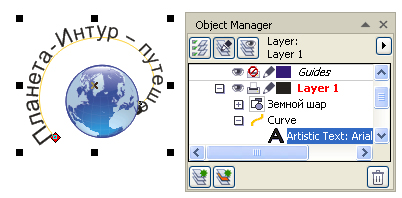
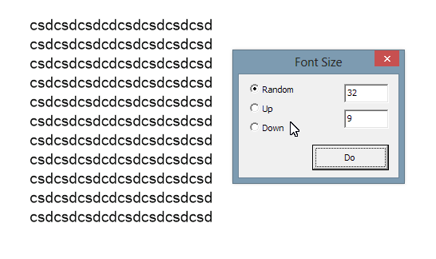

Убывающий кегль вдоль пути
Фраза с убывающим кеглем вдоль пути
В предлагаемом способе рассматривается задача размещения конкретной фразы с убывающим кеглем на конкретном завитке.
Кроме того, описываемый здесь приём, позволяет удобно и быстро выполнить работу.
Сразу оговорюсь, никакой автоматизации. Всё-таки задача нетипичная, да и займёт-то всего несколько минут.
Итак на рисунке ниже — завиток и фраза, которую надо уместить на него.
Для начала создайте «Быструю клавишу» для команды «Уменьшить размер символов».
Размер кегля набранной фразы не имеет значения. В этом примере —36 п.
Допустим, что в конце фразы символы будут примерно в 1,5 раза меньше, чем в начале фразы, т.е. 24 п. Разница составляет 12 п. Фраза содержит 39 символов. На один пункт убывания кегля придётся 39/12 = 3,25 символов.
Примем это значение равным 3. Пропускаем во фразе первые 3 символа и выделим следующие 3+1 символа (почему +1, чуть позже) и выполним команду «Уменьшить размер»
Выделим следующие 3+1 символа, захватывая один символ из предыдущей группы. На рисунке ниже Вы видите, что в окошке со списком размеров шрифта пусто, т.к. в группе выделенных символов оказались символы различных размеров.
Но после выполнения команды «Уменьшить размер» размер символов стал 34 п., т.е. уменьшился на один пункт относительно размера первого символа из выделенной группы.
Таким образом, выделяя каждый раз по 4 символа, один из которых — последний из предыдущей группы, доходим до конца фразы.
Описанный только что приём позволяет не выделять следующие символы до конца фразы или, выделяя лишь группу символов, не нажимать многократно клавишу команды «Уменьшить размер». Также нет необходимости всё время следить за размером.
Теперь поставьте фразу на нужную кривую так, чтобы начало фразы оказалось в начале кривой. На рисунке ниже видно, что фраза не уместилась и символы в конце фразы сгрудились в кучку.

Вогнать фразу на всю длину пути, не растягивая или сжимая её, а именно подобрав нужный размер символов, очень легко. Для этого выделите только текст без опорной кривой, как видно в диспетчере объектов на предыдущем рисунке. Для тех, кто не знает, как это сделать: инструментом «Текст» выделите часть символов и переключитесь на инструмент «Указатель».
Теперь схватите угловой маркер и потяните в направлении к центру выделения до тех пор, пока конец фразы не окажется на конце кривой. И соответственно наоборот, если фраза короче, чем путь, то маркер надо тянуть наружу, от центра выделения.
При необходимости растягивать фразу по ширине или высоте (с нарушением пропорций символов) пользуйтесь маркерами растяжения в ширину и в высоту (боковые или верхний, нижний).
Специально для CDRPRO.RU
Запрещается копирование урока или части его и публикация любым способом без письменного согласия автора
Накидал тут ради интереса :) Возможно добавлю в CdrTools

Добавь тогда уж до кучи, чтобы было как в иллюстраторе:
Внешняя ссылка
Да, макрос прям загляденье!
Выходит, вроде как бы я сподвигнул Sancho на создание макроса.
Собственно, вот сам макрос (функция называется sToolsShape.Oculist).
Sancho, спасибо! Отличная функция! А можно попросить Вас сделать изменение размеров не для каждой буквы, а для слов? Мне частенько именно такой функционал необходим для большого текста, вручную долго получается...